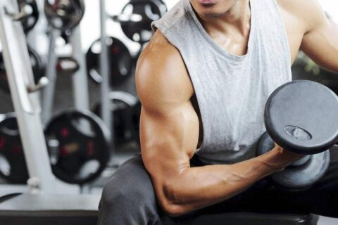

Welcome to Ejercicios efectivos de bíceps
Chevron
2021.06.26 19:47Moda Estilo de Vida Entretenimiento Cuidado Personal Watches Videos GQ Sports Newsletter Edición México México
© Obradovic
Brazos de superhéroe
Los mejores ejercicios para tus bíceps según la ciencia
por Magaly Muciño 2 de octubre de 2020Si andas en busca de los brazos de Jason Momoa, The Rock o Vin Diesel, esta rutina de ejercicio es perfecta para ti.
La próxima vez que vayas a entrenar, toma en cuenta que la ciencia tiene los ejercicios de bíceps más efectivos.
Todo aquel que ande en busca de unos brazos de gorila para lograrlo, sin lugar a dudas, tendrá que contemplar aspectos básicos y otros no tanto, que van desde la genética que está regida desde lo más esencial y determinada por el ADN como lo son el código ya definido de fibras musculares que se encontrarán mayormente en el tejido, así como la propia anatomía del cuerpo, la fisiología para entender como funciona la mecánica y la movilidad de los brazos, hasta aquellas cuestiones que podrían parecer más superfluas pero que en realidad no lo son, tales como la rutina de ejercicio (workout) o hasta la dieta que se lleve a cabo.
Esto es lo que seguramente ya conoces y nunca debes olvidar c uando se trata de hacer crecer el músculo en células y en cuanto a volumen.
Por lo tanto, para comenzar deberías ya saber que el American College of Sports Medicine recomienda que para hipertrofiar, es decir, hacer que la masa muscular crezca en volumen es importante que entrenes el grupo de músculos que deseas trabajar por lo menos dos a tres veces por semana en días no consecutivos.
Workout para brazos© Jose Luis Pelaez Inc
La ciencia te dice cuáles son los mejores ejercicios para aumentar tus bíceps.
Una investigación patrocinada por el sitio ACE fitness.org en el 2014 y realizada por el M.S. Scott Young bajo la guía del Ph.D. John Porcari, director del programa de Fisiología Clínica del Ejercicio y también del Programa de Ejercicio y Salud La Crosse que forma parte del plan de acondicionamiento físico de la Universidad de Wisconsin , reveló los 8 ejercicios más efectivos para activar el “Bíceps Braquial” basados en las rutinas más ejecutadas en los gimnasios.
Reclutaron a 16 jóvenes hombres y mujeres de 18 a 24 años quienes tuvieran cierta experiencia en la ejecución de levantamientos de peso, obvio esto para no errar en la técnica y de alguna forma estuvieran familiarizados con lo que tenían que realizar y de esta forma no causar en cierto modo en cuanto al método.
Según este estudio estos son los mejores ejercicios para bíceps , ordenados del menos chafa al mejor para que los añadas a tu rutina y puedas dar prioridad a los más efectivos.
8. Preacher Curl (Curl de predicador)
7. Incline Curl (Curl de bíceps inclinado con mancuernas)
6. EZ Curl “narrow grip” (Barra EZ de flexiones de bíceps con agarre cerrado)
5. EZ Curl “wide grip” (Barra EZ de flexiones de bíceps con agarre abierto)
4. Barbell Curl (Curl de bíceps con barra)
3. Chin-up (Dominadas con agarre y elevación a barbilla)
2. Cable Curl (Curl de Bíceps en polea)
1. Concentration Curl (Curl de concentración a una mano)
¿Puedes conseguir los músculos de The Rock?© RB/Bauer-Griffin
¿Por qué el ejercicio de concentración es mejor incluso por encima del que se ejecuta con una máquina de polea?
La razón es que en este ejercicio el músculo posee un aislamiento muy particular, ya que con los demás puedes activar otros músculos como el deltoides anterior o algún otro. También explican que en los otros ejercicios puede ser que la activación del bíceps sea diferente, al realizar un movimiento de vaivén del cuerpo que ellos definen como un “swing natural” lo cual estaría distribuyendo la carga en otros músculos.
Así que si quieres mostrar esos bíceps y presumirlos no solamente frente al espejo, ya tienes una buena lista para comenzar.
Recomendaciones generales para que establezcas tu workout:
Haz un set de 8 a 12 repeticiones por ejercicio. La resistencia o carga que metas busca sea retadora pero que en ningún momento entorpezca el número de repeticiones que debes realizar en cuanto a forma y técnica.
Si deseas aumentar la fuerza del músculo bíceps puedes hacer de 2 a 6 sets por ejercicio descansando de 2 a 5 minutos entre cada uno y ve aumentando gradualmente la carga.
Si quieres aumentar la masa muscular de los bíceps , haz de 3 a 6 sets de 6 a 12 reps por ejercicio, descansando de 30 a 90 segundos y también de ser posible aumenta el peso.
Si solamente te interesa tonificar haz de 1 a 3 sets de 12 a 20 repeticiones con peso ligero. Y si crees esto muy básico simplemente aumenta el número de reps.
Rutinas de ejercicioGQ Recomienda
Cuidado Personal
Los calvos más atractivos según Google (y lo que podemos aprender de ellos) por Alonso Martínez 29 de marzo de 2021Workout
Cuánto ejercicio debes hacer para poder comer como The Rock Johnson por Paloma González 14 de junio de 2021 Edición México AD Glamour Vogue GQ Términos y Condiciones Convenio del Usuario Aviso de Privacidad Quiénes Somos Media Kit Newsletter Suscripción Gestionar cookies© 2021 Condé Nast de México S.A. de C.V. Todos los derechos reservados.
